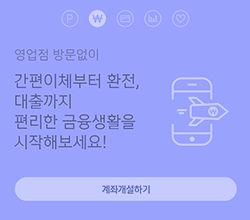

신한금융지주 통합 플랫폼
shinhan plus UX-

- 
WHY INTERGRATION
대다수 사용자들의 금융자산은 부동산, 은행예금, 펀드, 연금, 보험 등에 분산되어 있습니다
99%
사용자 중 65% 이상이 더 나은 통합 자산 관리 서비스에 대한 필요성을 이야기 합니다
65%
현재 자신이 보유 중인 총 자산과 월 지출 금액을 정확히 알고 있는 사용자는 17% 미만 입니다
17%
투자 및 자산 관리 보고서를 이해할 수 있다고 대답한 사용자는 단지 6%에 불과합니다
6%
그래서
신한금융지주에서 제공하는 서비스를
신한PLUS를 통해
통합적으로 사용자에게 제공합니다
-
- Investment
-
- Insurance
-
-
- Bank
-
- Credit card
UX Key Point
Inter-Service Experience
우리는 사용자의 경험을 단순히 디자인적 차원에서 머무는 것이 아니라
금융 분야의 서비스 사이에서 어떻게 극대화 시킬지를 고민하였습니다.
이러한 금융 서비스 간의 사용자 경험을 위해 우리는 먼저 핵심 요소를 도출하였습니다.
-
- Single Sign In
- 단 한번의 로그인으로
신한의 모든 금융서비스를
이용합니다
-
- One Swipe
Navigation - 신한의 모든 금융서비스는
한번의 스와이핑만 하면 이용
가능합니다
- One Swipe
-
- ShinhanPlus
Floting UI - 신한이 제공하는 금융서비스 앱
어디서나 신한 플러스로 바로
이용합니다
- ShinhanPlus
-
- Visual Cues &
Affordance - 사용자의 다음 행동을 유도하여
서비스간의 이동을 원활하게
합니다
- Visual Cues &
-
- Shinhan Point
- 신한 금융서비스를 이용하는
사용자를 위한
마일리지서비스를 제공합니다
-
- A.I Finance
Curator - 데이터 기반의 금융 정보를
맞춤형으로, 통합하여 전달합니다
- A.I Finance
-
- Criss-service
Learning Curve - 지관적이고 인지하기
쉬운 서비스를 제공합니다
- Criss-service
-
- Clarity of
Information
Grid - 핵심정보를 제공 UI Rule을 통해
정보를 명확하게 사용자에게
전달합니다
- Clarity of
Simple Finance UX
복잡한 금융 정보와 어려운 재무 용어, 프로세스를
명확한 단어와 필수 금융 정보 만을 제공하는
직관적인 인터페이스로 대체하였습니다.
Individual
and together UX
개별적 서비스의 특수성은 고려하면서
하나의 아이덴티티로 서비스를 제공합니다
Seamless Service UX
신한 PLUS를 통해 신한금융지주의 다양한 금융서비스를 막힘없이 한번에 이용하는 경험을 제공합니다.
독립된 오픈API로서 기능하며, 사용자에게 다른 어플리케이션의 추가 설치를 요구하지도 않습니다.